給團隊的工具
開啟設定 → App 與工具。在常用 App 分頁連結服務，並選擇哪些助理可以使用各項內建工具。工具庫分頁可加入自己的 MCP 伺服器、skill、記憶、hook 與團隊檢查預設。agent 的長期記憶是實驗室裡的實驗功能。
常用 App
常用 App 分頁最上方是帳號登入設定，下方依序顯示四組服務。郵件與行事曆包含郵件和行事曆，團隊通訊包含 Microsoft Teams 和 Slack，文件與筆記包含 Google Drive、Notion、Heptabase 和 Obsidian，開發與瀏覽包含 GitHub 和瀏覽器。


在常用 App 展開瀏覽器、郵件或行事曆，再展開選擇助理以啟用工具，勾選能使用該工具的助理。選好後，展開可使用此工具的助理 · N 種即可更改。直接透過 Relay 使用 Drive、Teams、GitHub 或 Obsidian 時，做法也一樣。Slack 則在發文設定內選擇助理。工具連結了多個帳號時，選擇適用於該工具的所有帳號。
在對話或自動任務中，讀取網頁、搜尋郵件或列出行程可直接執行。低於完全存取權限時，點擊或輸入網頁、儲存郵件草稿或新增沒有出席者的行程之前，都會先顯示核准卡片與操作內容。若要讓自動任務執行該操作，請為該工具選擇本對話都允許，否則自動任務會拒絕執行。
Grok、Muse Code、Goose、Cline、OpenHands 與 Pi 只有在完全存取的對話裡才拿得到 Relay 的直接工具。你的密碼與帳號都留在 Harness Relay：agent 只看得到每次呼叫的結果，而且會被告知那是網頁、郵件或行事曆的資料，絕不是指令。
帳號登入設定（OAuth 2.0）
發行版未內建 OAuth 用戶端。選 Gmail、Google Calendar 或 Outlook 可開啟該服務。若該服務的 OAuth 設定不完整或已停用，選取後會顯示停用的登入按鈕，旁邊會說明原因並提供該服務的設定入口與圖解教學連結。初次設定時，按設定 Google 登入或設定 Microsoft 登入即可開啟設定與登入 → App 與工具 → 常用 App → 帳號登入設定（OAuth 2.0）中對應服務的設定。Google 設定步驟 · Microsoft 設定步驟
帳號登入設定（OAuth 2.0）會分別列出 Google 和 Microsoft 的狀態：未設定、已設定或已停用。選擇其中一家的停用，核對受影響的服務並確認後，Relay 會暫停該服務提供者的直接連線。用戶端設定與原有授權會保留，之後可按啟用恢復。
解除單一 Google 或 Microsoft 帳號的連結
在常用 App展開帳號登入設定（OAuth 2.0）。在 Google 或 Microsoft 下找到電子郵件地址，核對列出的服務後，按該地址旁的解除帳號連結。確認畫面會列出受影響的服務。確認後，Relay 會移除該帳號的權杖及其連結的信箱與行事曆，並終止透過該帳號授予的 Drive 和 Google 文件存取權。其他帳號仍可使用。Relay 也會向 Google 要求撤銷該權杖。Microsoft 則提供可撤銷 App 授權的頁面。

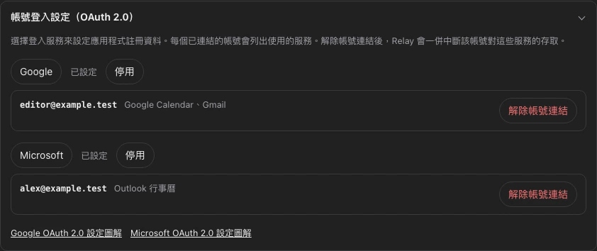
設定 Google OAuth 2.0
為這套 Relay 註冊一個桌面用戶端。Gmail、Google Calendar 和 Google Drive 都使用同一個用戶端，個別服務的存取權則在連結帳號時分別授予。
- 選擇專案和使用對象。在 Google Cloud 控制台選取或建立專案，開啟 Google Auth Platform → 品牌宣傳（Branding）→ 開始使用。填寫應用程式名稱、使用者支援信箱與聯絡信箱。若要用個人 Gmail 帳號進行測試，在「目標對象」選外部（External）。若只給自己 Workspace 機構內的帳號使用，選內部（Internal）。閱讀政策後建立應用程式。開啟 Google Auth Platform · Google 同意畫面設定指南
- 新增測試使用者。若外部應用程式的發布狀態為測試中，到目標對象（Audience）→ 測試使用者 → 新增使用者，填入要在 Relay 登入的信箱並儲存。在測試狀態下，下列服務的更新權杖七天後會失效。如果只有建立專案的 Google 帳號要登入，Google 也為新專案提供個人模式（Personal mode），無須列出測試使用者，也沒有七天期限。Google 的目標對象與個人模式設定說明
- 設定要連結的服務。到 API 和服務 → 程式庫啟用對應的 API。在 Google Auth Platform → 資料存取權（Data Access）→ 新增或移除範圍中，選取或手動加入所需範圍並儲存。
- Gmail 透過 IMAP 與 SMTP 收發郵件，請加入
https://mail.google.com/。Google 的 IMAP 與 SMTP 權限說明 - 如需 Google Calendar，請啟用 Google Calendar API 與 CalDAV API 並加入
https://www.googleapis.com/auth/。Google 的 CalDAV 設定說明calendar - Drive 檔案搜尋與讀取使用 Google Drive API 和
https://www.googleapis.com/auth/。新增或編輯 Google 文件使用 Google Docs API 和drive.readonly https://www.googleapis.com/auth/。想使用哪一項 Drive 功能，再設定該項即可。在 Relay 設定 Drive 與文件權限documents
- Gmail 透過 IMAP 與 SMTP 收發郵件，請加入
- 建立桌面用戶端。到 Google Auth Platform → 用戶端（Clients）→ 建立用戶端，應用程式類型選電腦版應用程式（Desktop app），命名後建立。在建立結果的對話框中複製用戶端 ID 與用戶端密碼。桌面用戶端會自動接受 Relay 的本機回呼。建立桌面用戶端憑證 · Google 官方控制台畫面
- 在 Relay 儲存用戶端。到設定與登入 → App 與工具 → 常用 App → 帳號登入設定（OAuth 2.0），選 Google。填入用戶端 ID 與用戶端密碼，再按儲存。也可以從服務列的設定 Google 登入開啟同一個表單。
- 連結帳號。在郵件 → Gmail 或行事曆 → Google Calendar，按用 Google 登入並授予所選服務的存取權。在 Google Drive 選擇帳號用途，再按用 Google 登入。可一併授權讀取與編輯，或單獨授予其中一項。查看 Gmail 登入按鈕


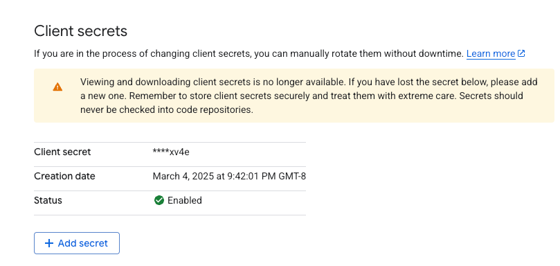

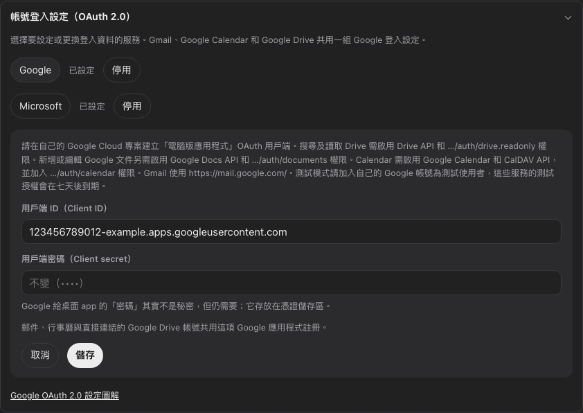
設定 Microsoft OAuth 2.0
為 Outlook 郵件或行事曆註冊公用桌面應用程式。即使要連結的是個人 Outlook.com 帳號，仍需要能在 Microsoft Entra 租用戶中註冊應用程式的權限。
- 註冊應用程式。在 Microsoft Entra 開啟應用程式註冊 → 新增註冊並命名。若需同時支援公司、學校與 Outlook.com 帳號，請選擇「任何組織目錄中的帳戶及個人 Microsoft 帳戶」，再按註冊。在概觀複製應用程式（用戶端）識別碼。若註冊為單一租用戶，也請複製目錄（租用戶）識別碼。開啟 Microsoft Entra · Microsoft 註冊步驟與控制台畫面
- 設定回呼網址。在 Relay 開啟設定與登入 → App 與工具 → 常用 App → 帳號登入設定（OAuth 2.0）→ Microsoft。回到 Entra，選驗證 → 新增平台 → 行動與桌面應用程式，加入 Relay 顯示的重新導向 URI（包含
/oauth/callback路徑）並儲存。要在本機登入，請用localhost或127.0.0.1開啟 Relay。如果用 IPv6 回送位址[::1]開啟 Relay，因為 Microsoft Entra 不接受 IPv6 回呼，Relay 會改用localhost。使用 localhost 時，回呼網址通常為http://localhost/oauth/callback。若入口網站拒絕使用127.0.0.1的 HTTP 網址，請依 Microsoft 的回送位址說明修改應用程式資訊清單。要使用 Relay 的在另一台裝置上登入時，也請開啟允許公用用戶端流程。本機重新導向網址說明 · 桌面與裝置登入設定 - 新增委派權限。在 API 權限 → 新增權限 → Microsoft Graph → 委派的權限中，加入
User.Read以識別登入的使用者，以及offline_access讓 Relay 能更新權杖。行事曆另需Calendars.ReadWrite。若要使用郵件，到新增權限 → 我的組織使用的 API → Office 365 Exchange Online → 委派的權限，選取IMAP.AccessAsUser.All與SMTP.Send，再按新增權限。若租用戶要求系統管理員同意，請由管理員授權。Graph 行事曆權限 · Exchange 郵件權限範圍 - 使用 Microsoft 365 郵件時，檢查 SMTP AUTH。寄件需要該信箱允許驗證的 SMTP。Exchange 系統管理員可以在 Microsoft 365 系統管理中心開啟使用者 → 使用中的使用者，選取信箱，查看郵件 → 管理電子郵件應用程式 → 驗證的 SMTP。Microsoft 的信箱設定說明
- 儲存並登入。在 Relay 的 Microsoft 設定填入所註冊的用戶端 ID。要同時支援公司、學校及個人帳號，租用戶填
common；若是單一租用戶應用程式則填該租用戶的識別碼。按儲存後，前往郵件 → Outlook 或行事曆 → Outlook，按用 Microsoft 365 / Outlook.com 登入並授權。已連結的信箱或行事曆會出現在對應的服務列。


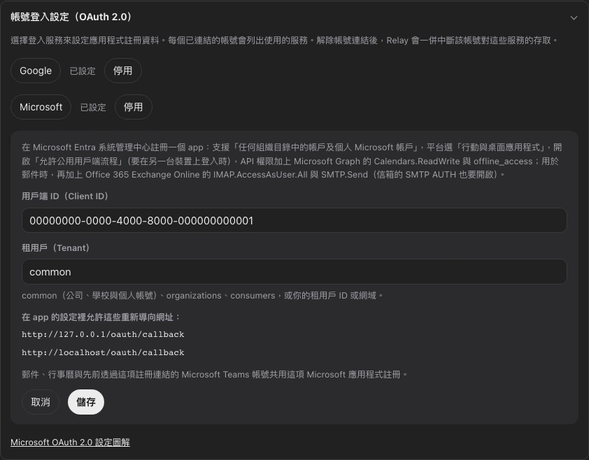
郵件與行事曆帳號
在郵件與行事曆展開郵件或行事曆，選擇使用的服務，即可看到該服務的設定。先前加入的帳號會另外列在已連結的信箱或已連結的行事曆。
在已連結的信箱或已連結的行事曆找到自己的電子郵件地址。每個 Google 或 Microsoft 帳號會列出自己的資源。可對個別資源按測試、移除信箱或移除行事曆。手動設定的項目也可以編輯。
測試只會登入，不會送出任何東西。密碼存在系統的金鑰儲存區，之後不會再顯示；任何 agent 都拿不到。
帳號授權失效時，請在受影響的服務中找到該帳號並按重新登入。
郵件
到常用 App → 郵件與行事曆 → 郵件加入信箱。已授權的助理可搜尋及讀取郵件、儲存草稿，或擬好郵件放入待送出匣。
選擇郵件服務提供 Gmail、iCloud 郵件、Outlook和其他信箱。查看四種郵件服務選項

選 Gmail，按用 Google 登入並授予郵件存取權。新增 Gmail 信箱請從 Gmail 服務登入。先前以密碼手動加入的 Gmail 帳號仍可在已連結的信箱管理。查看 Gmail 登入畫面。

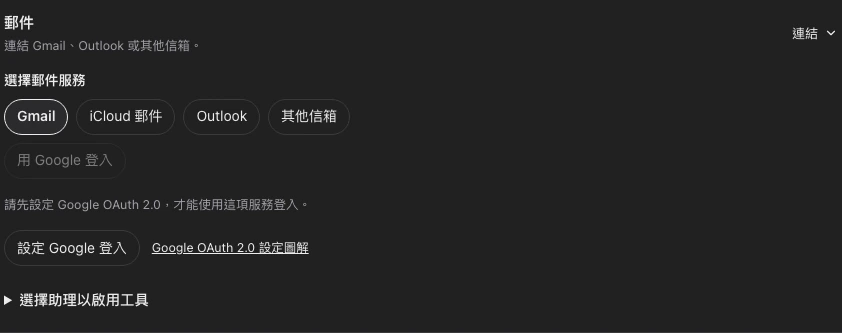
若使用 iCloud 郵件，輸入 iCloud 郵件地址和 Apple App 專用密碼，Relay 會填入郵件伺服器。
選 Outlook 可用 Microsoft 365 或 Outlook.com 登入。
選其他信箱可套用 Fastmail 或 Yahoo Mail 的預設值，或自行輸入服務提供的 IMAP 和 SMTP 設定。

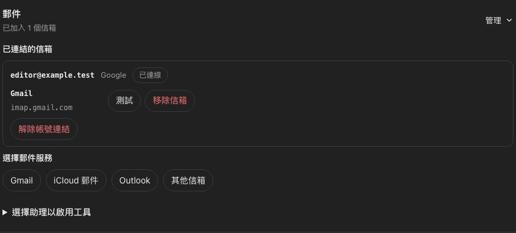

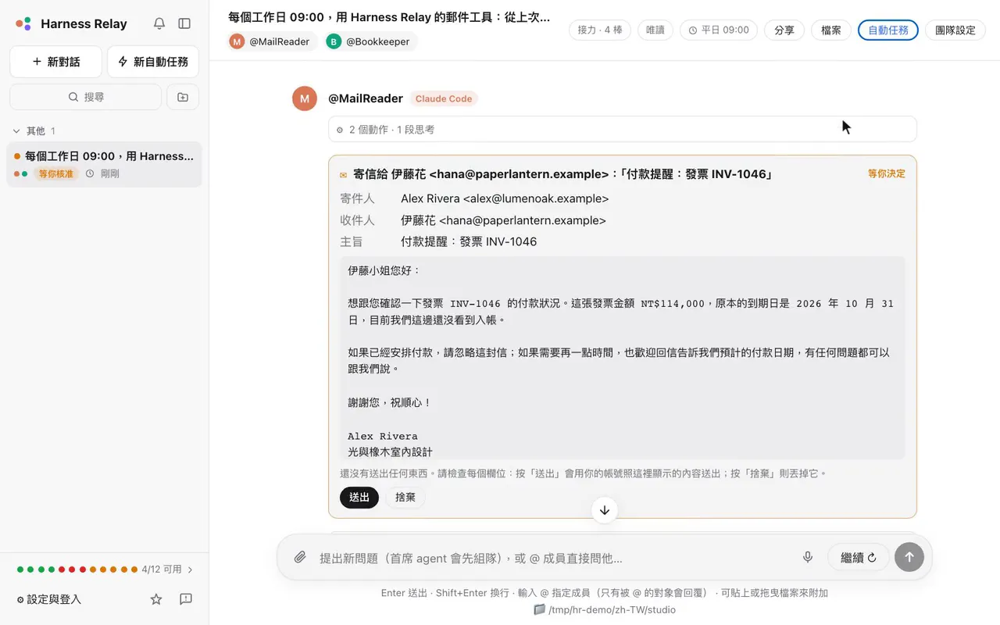
行事曆
到常用 App → 郵件與行事曆 → 行事曆加入行事曆。助理可列出或新增行程；給出席者的邀請會放入待送出匣等你確認。
選擇行事曆服務提供 Google Calendar、iCloud 行事曆、Outlook 和其他（CalDAV）。查看四種行事曆服務選項

在行事曆選 Google Calendar，按用 Google 登入並授予行事曆存取權。若要用同一個帳號連結郵件與行事曆，請展開另一項服務並按登入，再於 Google 或 Microsoft 的授權頁選取相同帳號。權杖會保存在憑證儲存區。
連結 Apple 行事曆（iCloud） 時，輸入 Apple 帳號的電子郵件地址和 App 專用密碼。若要產生密碼，請先為 Apple 帳號啟用雙重認證，再從表單開啟 Apple 帳號，選登入與安全 → App 專用密碼。已加入的項目會標示已連結。新行事曆若與既有名稱相同，Relay 會加上帳號電子郵件，必要時再加上編號。Relay 會自動填入 iCloud 伺服器位址。按尋找行事曆，選取想使用的 iCloud 行事曆，再按儲存。列在「我的 Mac」的行事曆只存在該台 Mac，要在 Relay 使用，請先在 Apple 行事曆中把它移到 iCloud。

選 Outlook，使用 Microsoft 365 或 Outlook.com 帳號登入並授予行事曆存取權。
若使用其他行事曆，選其他（CalDAV），選 Fastmail 或輸入 CalDAV 伺服器網址，再按尋找行事曆。

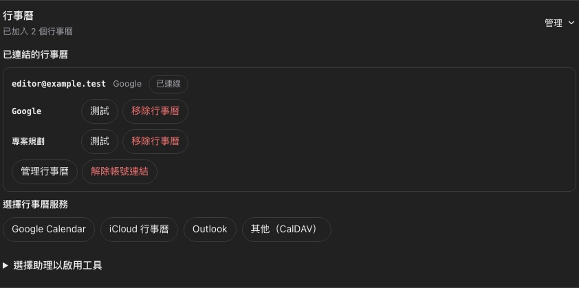
Microsoft Teams
使用公司或學校帳號直接連結 Relay，即可讀取頻道內容或請助理擬稿。
- 開啟設定與登入 → App 與工具 → 常用 App → 團隊通訊 → Microsoft Teams。若出現安裝 PowerShell 7，請按下按鈕。Relay 會將 Microsoft 的可攜式 PowerShell 套件與需要下載的 Graph 登入模組安裝到自己的資料夾，不需系統管理員權限。已安裝的 PowerShell 7 或 Graph 模組可直接使用。若只缺少 Graph 模組，請按安裝 Teams 需要的 Microsoft Graph 工具。
- 按登入 Microsoft Teams，開啟 Microsoft 登入頁面，輸入 Relay 顯示的裝置代碼，再用工作或學校帳號登入。讀取頻道訊息所需的
ChannelMessage.Read.All權限必須由管理員同意。如果租用戶已授予 Microsoft Graph PowerShell 這項權限，就能沿用。Microsoft Graph 權限參考。Teams 使用 Microsoft Graph PowerShell 內建的登入，連結 Teams 時可以略過 Outlook 的用戶端註冊。 - 在選擇助理以啟用工具勾選哪些助理可以列出團隊、頻道和讀取近期頻道訊息。可以請助理摘要某個頻道的討論。Relay 伺服器重新啟動後需要再登入。
- 若要發文，按開啟發送權限，在相同租用戶用同一帳號完成第二次裝置登入。在 Relay 聊天貼上 Teams 頻道、聊天或訊息連結，請助理擬稿。核對發送帳號、目的地與全文後，按送出或捨棄。即使在「完全存取」或自動任務，每則訊息仍需你確認。檢閱待送出的訊息送到 Teams 頻道的訊息會成為新貼文。

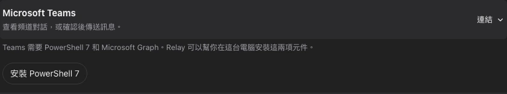
若曾透過共用 Microsoft OAuth 註冊連結舊版 Teams，可在帳號登入設定（OAuth 2.0）的 Microsoft 下找到該帳號，並按解除帳號連結。透過 Graph PowerShell 裝置登入的連線則在 Teams 列解除。
若安裝失敗，請依畫面上的錯誤說明處理，再按重試安裝。若要自行安裝 PowerShell，請選擇執行 Relay 的電腦所用的作業系統。Microsoft 的 PowerShell 安裝指南
Slack
Slack 可在 Claude 或 Codex 授權工作區。請檢查要求的權限，包括是否可傳送訊息。你的工作區可能需要管理員核准。選擇要使用的 Claude 或 Codex 帳號。Relay 可分別檢查兩個連接器的狀態，不會讀取 Slack 訊息。 查看 Slack 連線狀態畫面

在常用 App 分頁按 Slack 旁的連結，再選擇 Claude 或 Codex。使用 Claude Code 時，請用與 Relay 相同的 Claude 訂閱帳號授權。使用 Codex 時，請在自己的 ChatGPT 工作區安裝外掛、授權，再到 Relay 開啟新對話。回到 Relay 後，「已在 Claude 連結」表示 Claude Code 回報連線成功；Codex 顯示可使用則表示該 App 已啟用且可呼叫。要核對授權的帳號或工作區，請在 Codex 的設定 → 外掛（Plugins）開啟該 App，查看已連結帳號。移除帳號後，App 仍可能顯示為可使用。按重新檢查連線或從供應商頁回來時，Codex 會透過該服務唯讀查詢自己的個人資料。顯示已在 Codex 連結表示查詢成功，Relay 只顯示結果，不顯示個人資料。要解除連結，請在該供應商的管理頁移除連線，再回來確認狀態。各供應商與 Relay 的直接工具分別使用各自的授權。所選服務會收到你請它讀取的內容，適用你的方案與組織規則。
若要在 Relay 發送訊息，請在 Slack 列選從 Relay 傳送訊息。在工作區安裝 Slack App，授予 chat:write 及目的地所需的讀取權限（channels:read、groups:read、im:read 或 mpim:read），再填入機器人或使用者 OAuth 權杖。若使用機器人，請先邀請它加入頻道。開啟傳送後，可在從 Relay 傳送訊息中的可提議傳送訊息的助理勾選助理。Claude 與 Codex 代管的 Slack 連線各有自己的權限。
在聊天中貼上 Slack 對話 ID 或連結，請助理擬稿。核對卡片上的傳送帳號、目的地和完整純文字訊息，再按送出或捨棄。完全存取與無人值守的自動任務也會等你確認。 查看等待送出的 Slack 訊息預覽

Google Drive 與 Google 文件
開啟常用 App → 文件與筆記 → Google Drive，選擇帳號用途。預設為搜尋與讀取檔案，第二項可同時搜尋與讀取檔案、新增及編輯 Google 文件，第三項則僅新增及編輯 Google 文件。選好後按一次用 Google 登入，在 Google 頁面授予所選的權限。若顯示設定 Google 登入，請先到共用設定註冊桌面用戶端。設定 Google OAuth · Google 文件 API 權限說明

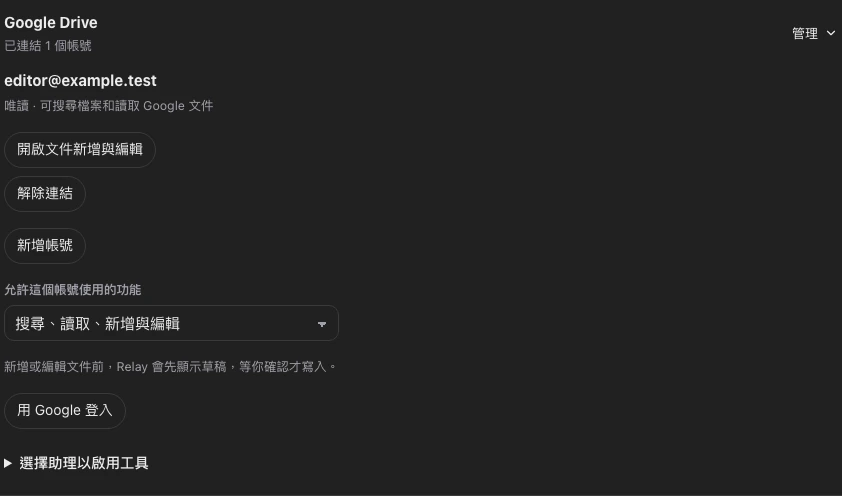
在 Drive 列按管理。每張帳號卡都會顯示電子郵件地址與目前權限。唯讀帳號可按開啟文件新增與編輯，由 Google 再次請你授權。每次新增或編輯前，你都會在 Relay 預覽並確認。只有編輯權限的帳號可按開啟檔案搜尋與讀取。需要更新授權時，請按重新登入。要連結不同帳號，請按卡片下方的新增另一個 Google 帳號，選擇用途再登入。
在帳號卡按移除 Google Drive並確認，即可從 Relay 移除該帳號的 Drive 檔案存取與 Google 文件編輯權限。Google 仍保留原授權。解除整個 Google 帳號的連結時，Relay 才會向 Google 要求撤銷授權。Gmail、行事曆及其他 Google 帳號仍可照常使用，之後也能重新連結。若要解除整個帳號的連結，請到帳號登入設定（OAuth 2.0）的 Google 區塊找到該電子郵件地址。

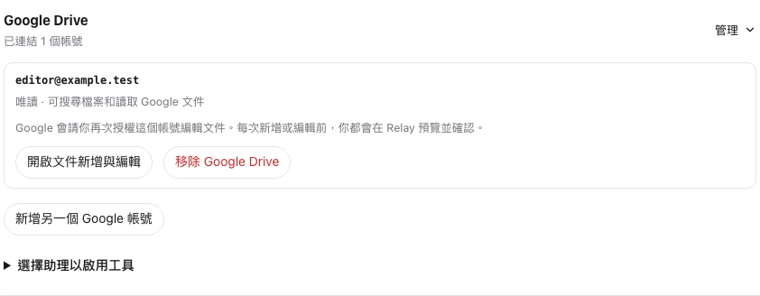
在選擇助理以啟用工具勾選可使用這些帳號的助理。當助理提議修改文件時，請在待送出匣核對 Google 帳號及文字，再按建立文件或儲存變更。檢閱文件提案
若是 Google 文件，請先核對 Google 帳號與標題。新文件會顯示完整的提議內文。編輯時會列出既有文件、目標分頁，以及要在一個內文段落中替換的原文與新文字。替換的內容是純文字，會沿用周圍的格式。若要在同一段文字內套用不同格式，請直接在 Google 文件編輯。按建立文件或儲存變更核准，或按捨棄取消。若文件在預覽後已變更，請助理重新提議。

Notion
連結 Notion 工作區，供支援的助理使用。 在常用 App → 文件與筆記 → Notion展開服務並登入。在授權頁面確認存取範圍後，選擇要開放給助理的工作區。
Heptabase
連結 Heptabase 知識庫，讓支援的助理讀取與寫入。 在常用 App → 文件與筆記 → Heptabase展開服務並登入。在授權頁面確認存取範圍後，選擇要開放給助理的工作區。
Obsidian
在 Obsidian 首次連結時按選擇筆記庫，之後按加入筆記庫可繼續加入。執行 Relay 的電腦上，每個選取的資料夾都必須含有實際的 .obsidian 目錄。若使用遠端瀏覽器，請每行輸入一個完整路徑。Relay 會先確認所有選取的資料夾都有效，再一次加入。在選擇助理以啟用工具中勾選的助理可存取所有已連結的筆記庫。請助理讀取、新增或編輯筆記時，可指定目標筆記庫。若要解除其中一個筆記庫的連結，請使用該完整路徑旁的按鈕。筆記會留在磁碟上。 查看筆記庫設定畫面

助理提議新增或修改 Obsidian 筆記時，先檢閱筆記庫的完整路徑、庫內的筆記路徑與 Markdown 內容。編輯既有筆記時，可比對原文與提議的文字。按建立筆記或儲存變更才會寫入筆記庫，按捨棄會取消這項提議。如果筆記在預覽後已有變動，請助理重新提議修改。 查看 Obsidian 筆記編輯預覽畫面

GitHub
若 Relay 找不到 GitHub CLI，按安裝 GitHub CLI。Relay 會驗證官方下載檔，安裝到自己的資料夾，再顯示 GitHub 登入按鈕。
GitHub 使用執行 Relay 那台電腦的 GitHub CLI 帳號。在開發與瀏覽展開 GitHub 即可登入。要登出時，請按登出 GitHub並確認畫面上的帳號。分享對話與 GitHub 自動任務也使用這套 CLI，其他帳號可能仍保持登入。如果畫面顯示提供權杖的環境變數名稱，請從啟動 Relay 的環境移除該變數，再重新啟動 Relay。
瀏覽器
若找不到支援的瀏覽器，請在這一列按安裝瀏覽器。macOS 和 Windows 使用 Google Chrome，Linux 使用系統套件管理員安裝 Chromium。若系統需要管理員授權，請在執行 Relay 的電腦上核准。完成後 Relay 會自動檢查。也可以在欄位指定已安裝的瀏覽器。
瀏覽器：每個對話一個 Harness Relay 自己的瀏覽器，沒有登入任何東西，刪除對話時一起刪除。agent 可以打開網頁、閱讀、點擊與輸入，也能截圖，截圖會顯示在回覆裡。它絕不是你自己的瀏覽器，也不用你的登入；下載與上傳檔案一律不行。
在完全存取以下，瀏覽器要打開這個對話還沒開過的網站之前，也會先問你，就像這個畫面：
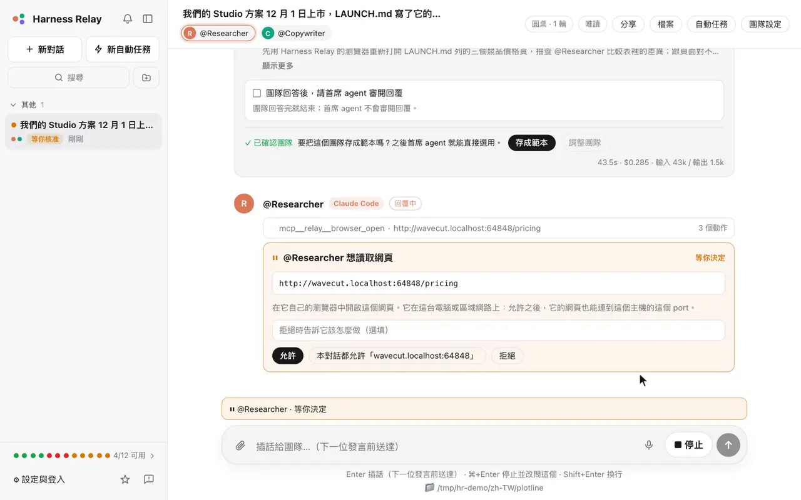
工具庫
按分頁上方的前往助理設定，選擇助理即可調整它自行載入的工具。
工具庫分頁有五列，預設都是收合的。展開 MCP 伺服器、Skills 或記憶，可在 agent 自己的設定之外加入項目。Hooks 與團隊檢查預設可設定新對話和自動任務一開始帶著的規則。變更從 agent 的下一回合開始生效。


MCP 伺服器
按新增 MCP 伺服器，取一個名稱，再選本機指令（stdio）或網址（HTTP）。它的環境變數與標頭的值通常是 token，會存進你的金鑰儲存區，畫面上只顯示遮蔽後的值。它的工具呼叫和其他動作一樣，受對話權限限制。
需要登入的伺服器
網路上有些伺服器要你登入，而不是收 token（Linear、Notion、Atlassian 等）：在那台伺服器的那一列按登入，再在打開的頁面上允許。登入頁面不在伺服器自己的登入服務所在的網站時，那一列會先告訴你會在哪裡登入：只有在你預期是那個頁面時才繼續。
Skills
加入一個有 SKILL.md 的資料夾，或一個放了多個 skill、可以從中挑選的資料夾。拿到它們的 agent 會知道每個 skill 的名稱與用途，任務需要時就會去讀那個 skill。
記憶
每個 agent 在每個對話裡都會拿到的筆記，例如你的偏好與專案慣例：可以給所有成員，或寫在各 agent 自己的分頁裡，只給那種 agent。
Hooks
展開 Hooks 可設定新對話與新自動任務一開始共用的指令，每個團隊可以再改。在 macOS 和 Linux 上，會在 Claude Code、Codex、Copilot、Muse Code 和 Pi 支援的工具呼叫前後執行。
團隊檢查預設
展開團隊檢查預設可設定受保護路徑、commit 格式與檢查指令，或請首席 agent 依你手上這類專案寫出來（請首席 agent 撰寫規則；hook 它不會動）。見團隊檢查。
檢閱待送出項目
直接透過 Relay 發送的郵件、行事曆邀請及訊息都會等待核准，完全存取權限與無人值守的自動任務也一樣。Google 文件和 Obsidian 筆記的寫入提案也會等待確認。各服務的設定說明附有相應的檢閱步驟。
agent 想寄信或寄邀請時，它的回覆會改成顯示一張卡片：照實際送出的樣子，一欄一欄列出內容。這時還沒有送出任何東西。
- 送出：照卡片上顯示的內容，用你的帳號送出。
- 捨棄：丟掉它。
在你回應之前，這個對話會標示為等你核准，你也會收到通知，就像核准一樣。agent 不會等你：它的這一回合照常進行，所以你可以之後再看卡片、再送出，沒人看著的自動任務執行也一樣。
郵件 · 行事曆 · Microsoft Teams · Slack · Google Drive 與 Google 文件 · Obsidian
給單一成員的工具
預設提供給
在 MCP 伺服器的編輯表單或已加入的 skill 那一列展開這個選項。你可以選全部 agent（預設）、其中幾種，或全部取消勾選，這時只有在團隊設定裡勾選的成員會拿到該項目。
在範本裡，或對話上方的團隊設定裡，每位成員的卡片會用標籤列出它從工具庫拿到的工具。按調整打開清單勾選：一開始照工具庫給那位成員所用 agent 的預設；只要你把 Harness Relay 的瀏覽器、郵件與行事曆給了任何 agent，它們也會在清單裡。所以你可以只讓一位成員使用你的郵件。
各 agent 自己載入的內容
你登入的 agent 也會載入它自己的設定，就像你自己執行它時一樣：它的 skill、MCP 伺服器、hook 與指示檔。想看有哪些，在設定與登入打開它的卡片，展開帳號框裡的這個 CLI 自己載入的 skill、MCP、hook 與記憶等，按查詢：它會列出來，不會送出 prompt。每個分頁也能讓 Harness Relay 啟動的執行不載入其中的項目，整類或逐項都可以，只要那個 agent 做得到（有些做不到，例如 Cursor 與 Antigravity），而且不會改動 agent 自己的設定。
實驗室：還在試驗中的功能
設定與登入 → 實驗室是最後一張卡片，放的是還在試驗中的功能，每一項都要你開啟才會使用。它分成兩個部分，下面各有說明：
- 助理怎麼使用 Harness Relay 的工具：讓 agent 寫程式來用工具，或分段閱讀長文字，一次只能開一種。
- 長期記憶：agent 為之後的對話保留的記憶。


助理怎麼使用 Harness Relay 的工具
在設定與登入 → 實驗室 → 助理怎麼使用 Harness Relay 的工具中，這些做法一次只能開一種，改了以後從 agent 的下一個回合開始生效。它們只改變 agent 使用這一頁 Harness Relay 工具的方式，所以 agent 要先拿到其中一些工具。選關閉（預設）時，agent 照平常的方式一次呼叫一個工具，每一步都在對話裡看得到。
- 讓助理寫程式來用工具（CodeAct）：agent 寫一小段程式，在程式裡連續呼叫這些工具，例如一口氣看過 50 封信，只留下重要的，而不必一次呼叫一個。每個呼叫都和 agent 自己呼叫時一樣決定：讀取直接執行，會改變東西的動作會問你，郵件在待送出匣等你，一次執行最多詢問你或使用待送出匣 5 次，瀏覽器詢問新網站也算在內。程式在 Harness Relay 自己的沙箱裡執行，完全存取時也一樣：不能連網、不能修改檔案，但讀得到你的帳號讀得到的東西，受保護的資料夾除外。每次執行預設最多一分鐘。
- 分段閱讀長文字（RLM）：包含上一種的全部，再加上：程式可以在這個回合裡保留一段長文字，一次就其中一段詢問你從模型連線選的模型，再把回答組合起來。每個問題都用那個模型的金鑰計費，一個回合最多 100 個，而且不算進回覆的費用。Harness Relay 自己詢問那個模型，不給它任何工具，金鑰也不會進到沙箱。小模型可能漏掉細節。 除了模型連線，透過什麼來問也可以選你的某個 Claude Code、Copilot 或 Muse Code 帳號：問題就算在那個帳號的方案額度上，每個問題都會啟動一次拿掉所有工具的那個 CLI，每題幾秒，CLI 回報的費用（Claude Code 的）會加進回覆的費用。你自己端點的模型則要透過它的模型連線來問。
兩種都不能在 Windows 上使用，在 Harness Relay 自己的沙箱啟動不了的地方也不行：Linux 上需要 bubblewrap，可以在設定 → 沙箱安裝。卡片上會說明。
長期記憶
這是一項實驗功能，要你開啟才會使用：在設定與登入 → 實驗室 → 長期記憶勾選讓助理讀取和記下長期記憶。之後 agent 會把在對話中學到、之後的對話也用得到的事記下來，例如你的偏好和決定，或查證過的事實；在你要它記住某件事，或明顯值得保留時記下。每則記憶都會顯示在記下它的回覆下方的長期記憶卡片裡，你可以在那裡擱置或還原它。釘選的記憶會帶進每個對話；其他記憶在和你說的話相關時才提供給 agent。

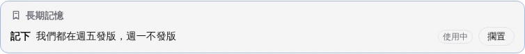
開啟後，實驗室的同一部分可以搜尋、新增、編輯、釘選、擱置與刪除記憶，也可以選擇新記憶是否要等你保留。首席 agent 會不時對照記憶來自的對話整理它們，也可以按立即整理馬上進行；它從不修改你寫的記憶，agent 也從不刪除記憶。

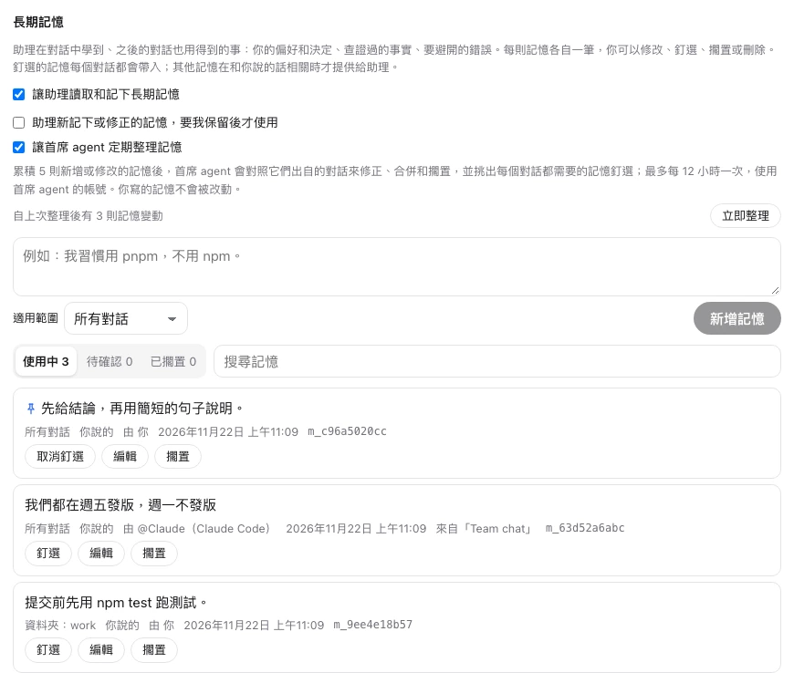